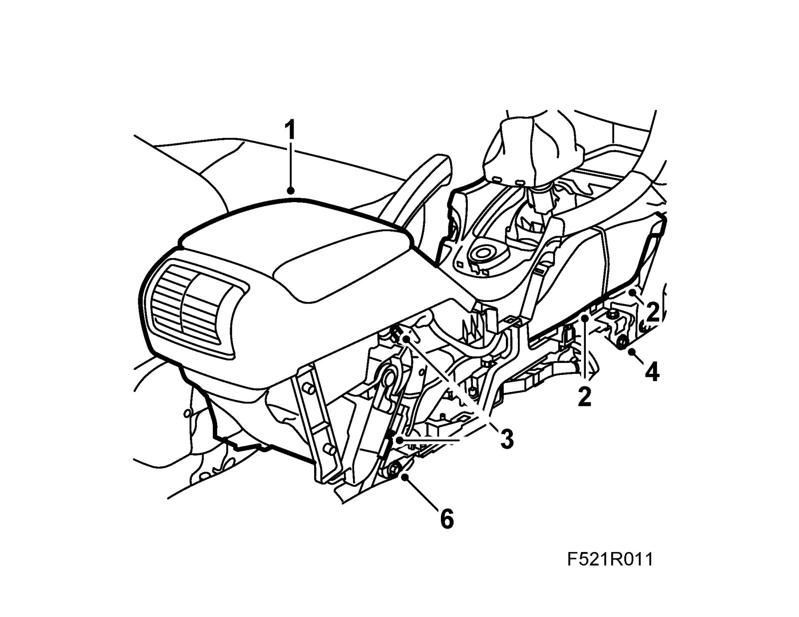
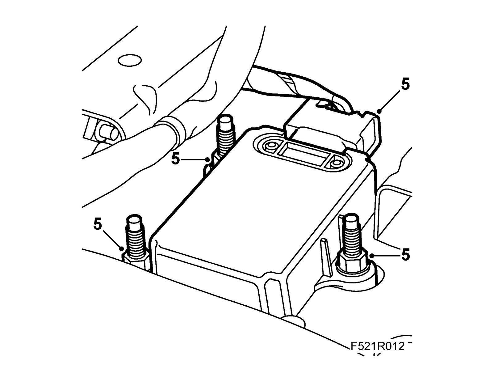
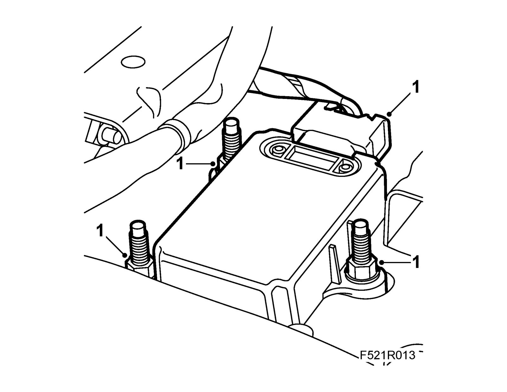
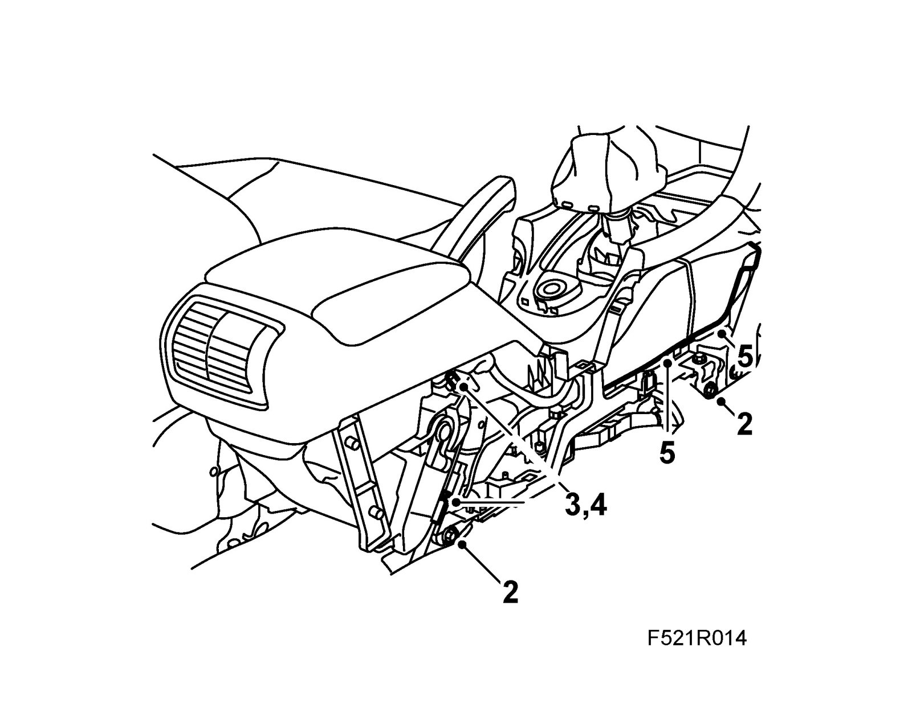

Yaw Rate Sensor: Service and Repair
Yaw sensor (658)Important
ESD-SENSITIVE COMPONENT
Earth yourself by touching the car body before plugging in/unplugging components. Do not touch the component pins, see Removing electronic components.
To remove
1. Remove floor console or floor console, with UHP connection.

2. Remove the air duct.
3. Loosen the adjustment and unhook the cables. Remove the cable ferrules from the console.
4. Move the front seats into their rearmost positions. Mark the position of the front centre console bolts. Remove the front bolts.
5. Move the seats into their forwardmost position. Remove the rear console bolts.
6. Lift up the console and remove the gyro sensor and unplug the connector.

To fit
1. Plug in the gyro sensor.
Tightening torque: 10 Nm (7.5 lbf ft)

2. Fit the console. Make sure the front bolts align with the markings.
Tightening torque: 10 Nm (7.5 lbf ft)

3. Connect the brake cables.
4. Adjust the cables.
5. Fit the air ducts.
6. Fit floor console or floor console, with UHP connection.
7. Park the car on a level surface.
8. Connect the diagnostic tool.
9. Select All - Add / Remove - Other Components - Yaw Rate Sensor Calibration. Follow the instructions on the screen.
10. Disconnect the diagnostic tool.